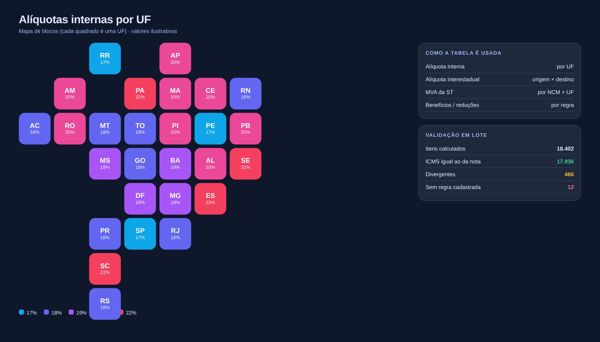

Tela de demonstração com dados fictícios
01
Lógica do negócio
02
Como resolvi com dados
01
Parâmetros
Tabelas de alíquotas, MVA e regras por UF e NCM em SQL Server.
02
Regras de cálculo
ICMS próprio, DIFAL e ST implementados com Decimal para não perder centavos.
03
Cálculo em lote
Recalculo item a item a partir do XML da nota.
04
Conferência
Comparo com o valor destacado e com a apuração no SAP.
05
Entrega
Memória de cálculo, lista de divergências e itens sem regra cadastrada.
03
Tecnologias utilizadas
Fontes de dados
NF-e (XML)Tabelas de alíquotas e MVASAP
Bancos e SQL
SQL Server (tabelas de parâmetros)pandas
Processamento
PythonDecimalpandas
Interface
Streamlit
Entrega
Memória de cálculoExcel de divergências
Automação
Launcher .bat
04
Funcionalidades
Calculadora com memória de cálculo passo a passo
ICMS próprio, DIFAL e ST
Validação em lote contra a nota fiscal
Mapa de alíquotas por UF
Itens sem regra cadastrada
05
IA aplicada neste projeto
Como usei IA
Casos de borda por UF, ST com MVA e arredondamento com Decimal. Os valores da tela são ilustrativos.

Miguel Vinicius Moura Martins
Defini a regra de negócio, modelei os dados, validei os números contra o processo manual e desenvolvi a ferramenta com apoio de IA.
ICMSDIFALSubstituição tributáriaNF-ePythonDecimalStreamlit